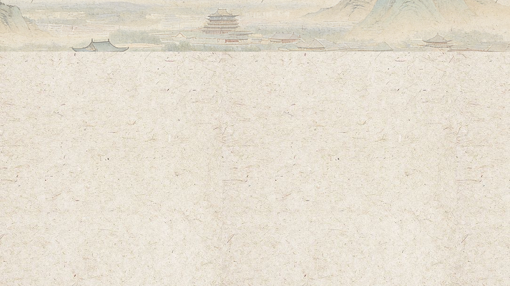
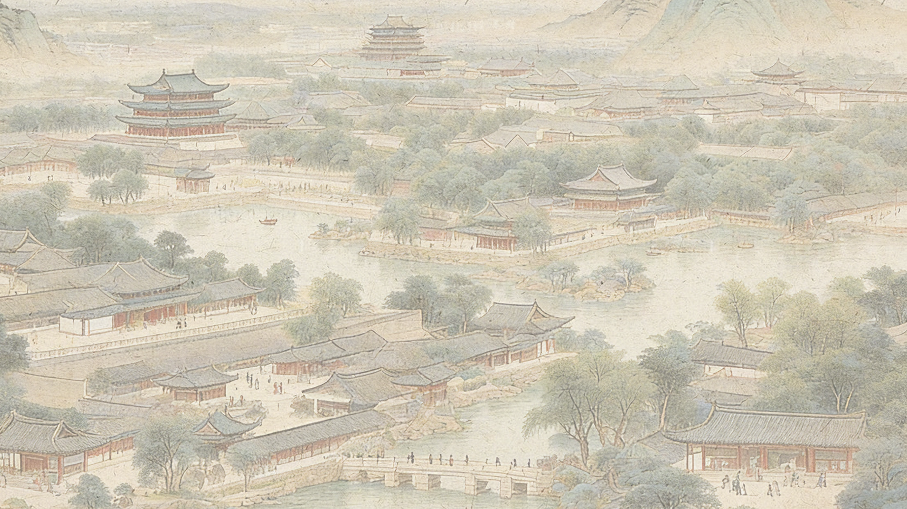
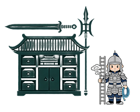
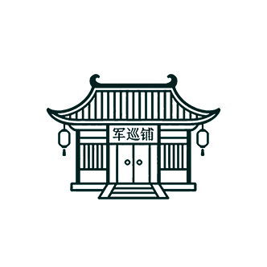
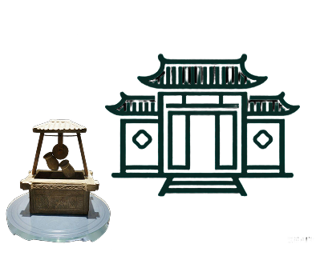
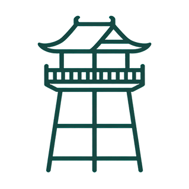
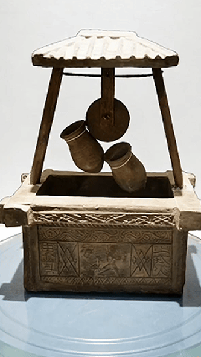
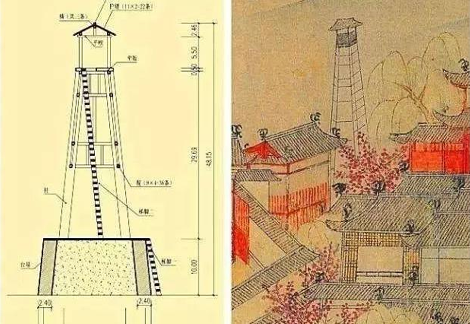
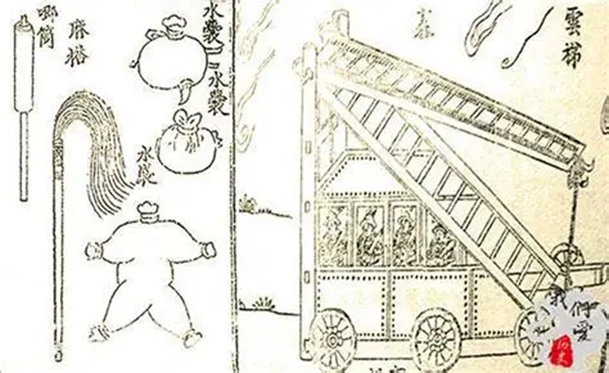
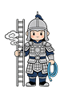

关卡三：消防灭火

关卡三：消防灭火
「临安火政录」
您是南宋淳祐年间临安城新任火政官
请完成全城火政核验，守护临安城平安
您是南宋淳祐年间临安城新任火政官
请完成全城火政核验，守护临安城平安

临安城为行在之都，人烟稠密，屋宇相连，寸土寸金，
偏偏民居多为木构，一旦走水，便是火烧连营的大祸。
临安城为行在之都，人烟稠密，屋宇相连，寸土寸金，
偏偏民居多为木构，一旦走水，便是火烧连营的大祸。
今日是你上任的第一日，需亲自巡查全城六大防火体系，核验值守、器具、设施是否完备，绝不能留半分火患。
今日是你上任的第一日，需亲自巡查全城六大防火体系，核验值守、器具、设施是否完备，绝不能留半分火患。





【结局：临安无虞】
你已完成临安城全部 6 大防火体系的巡查，
全城火政井然，值守到位，器具完备，水源充足，隐患尽除。
这一年，临安城未发生一起大型火灾，
百姓安居乐业，皆称颂你为「临安防火第一人」，
你的名字，也随宋代完善的消防体系，一同载入史册。
你已完成临安城全部 6 大防火体系的巡查，
全城火政井然，值守到位，器具完备，水源充足，隐患尽除。
这一年，临安城未发生一起大型火灾，
百姓安居乐业，皆称颂你为「临安防火第一人」，
你的名字，也随宋代完善的消防体系，一同载入史册。
返
核心原理：配套专用灭火器具，形成标准化装备体系，覆盖登高、破拆、喷水、扑火全场景，是古代消防队伍的核心作战装备。
核心应用于北宋东京汴梁军巡铺、南宋临安潜火队，核心工具包括水袋、水囊、溅筒、麻搭、云梯、火叉等，宋代《武经总要》有完整记载与形制规范。
核心应用于北宋东京汴梁军巡铺、南宋临安潜火队，核心工具包括水袋、水囊、溅筒、麻搭、云梯、火叉等，宋代《武经总要》有完整记载与形制规范。
核心原理：建立夜间巡警、专职消防队伍，形成「巡查 - 预警 - 处置」全流程，是世界上最早的专职公共消防体系雏形。
南宋临安防隅巡警体系：设置专门潜火队，为专职消防队伍，配备全套灭火器具，火情发生时即刻赶赴处置。
南宋临安防隅巡警体系：设置专门潜火队，为专职消防队伍，配备全套灭火器具，火情发生时即刻赶赴处置。
核心原理：建筑周边设置大容量储水容器，全天候备水，就近灭火，实现火情初起时的快速处置，是建筑防火的第一道防线。
北京故宫太平缸：清代鼎盛时期设 308 尊，每缸可储水 3000 余升，冬季设专人保温防冻，确保全年可用。
北京故宫太平缸：清代鼎盛时期设 308 尊，每缸可储水 3000 余升，冬季设专人保温防冻，确保全年可用。

核心原理：开凿水井、河渠，构建全城消防水源网络，为火灾扑救提供核心供水保障，是古代城市消防体系的基础。
汉代「东井灭火」陶井：河南博物院藏，为汉代水井灭火功能的实证。
汉代「东井灭火」陶井：河南博物院藏，为汉代水井灭火功能的实证。

核心原理：高处建造专用瞭望建筑，专人 24 小时值守，以旗帜、灯光、鸣钟示警，联动消防队伍，是古代城市火灾预警的核心枢纽。
南宋临安城望火楼：全城设 10 余座，形成全覆盖预警网络。
南宋临安城望火楼：全城设 10 余座，形成全覆盖预警网络。

【军器库管事逐一演示器具】大人请看！这是云梯，可登高破拆、上屋灭火；这是溅筒，以大竹打通关节，灌水其中，可喷水灭远火；这是麻搭、火叉，可近距离扑打明火；还有水袋、水囊，用牛马皮制成，可运水奔袭，一应器具，《武经总要》里都有定规，潜火队人人熟用！

【潜火队队长率队行礼】大人！我等为临安城专职潜火队，全城每三百步设一处军巡铺，每铺配铺兵五人，
日夜沿街巡防，严查夜间火禁，一旦闻钟示警，即刻携全套器具奔赴火场，拆障、灭火、救人，一应职责绝不含糊！
【官衙管事上前回话】大人，这太平缸是官衙、民居防火的第一道关口！这一口缸便能储水三十石，每日都有专人换水满缸，冬季还要裹棉、烧炭防冻，确保一年四季缸水满溢，一旦有小火情，随手就能取水扑灭，绝不让小火酿成大祸。
【城中里正上前回话】大人，此井为临安城专用消防水源井，深三丈，四季不竭，像这样的水井，
全城街巷共设二十余处，再加上城外西湖、城内运河，织成了一张全覆盖的水源网，一旦起火，随处都能取水救火！
【望楼兵卒举手示意】大人，此处为全城最高望火楼，我等二人轮流站立，但凡见一丝烟火，白日挥旗、夜间举灯，同时敲响铜钟，指向起火方向，全城军巡铺即刻响应！